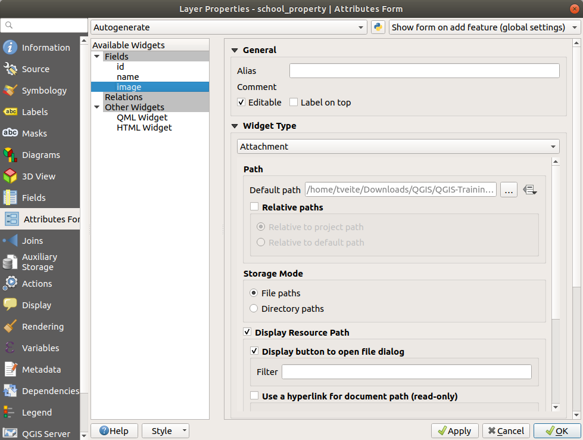
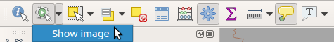
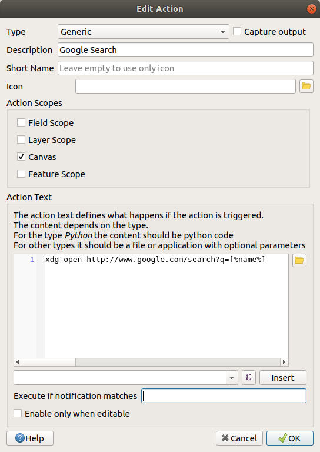

5.4. သင်ခန်းစာ - လုပ်ဆောင်ချက်များ (Lesson: Actions)
ယခင်ပြီးခဲ့သောသင်ခန်းစာတွင် default action (လုပ်ဆောင်ချက်) တစ်ခုအကြောင်း မြင်တွေ့ခဲ့ပြီးဖြစ်ပါသည်။ ယခုအခါ ကိုယ်ပိုင် action များကို သတ်မှတ်ဖန်တီးမည်ဖြစ်ပါသည်။
Action တစ်ခုဆိုသည်မှာ feature တစ်ခုပေါ်တွင် click နှိပ်လိုက်သောအခါ ဖြစ်ပေါ်လာသည့် တစ်စုံတစ်ရာဖြစ်သည်။ မြေပုံတွင် အပိုလုပ်ဆောင်ချက် အများအပြားကို ထည့်သွင်းနိုင်ပါသည်၊ ဥပမာအားဖြင့် object တစ်ခုအကြောင်း ထပ်ဆောင်းအချက်အလက်များကို ထုတ်ယူပေးနိုင်ပါသည်။ Action များသတ်မှတ်ပေးခြင်းသည် မြေပုံတွင် မြင်ကွင်းအသွင် အသစ်တစ်ခုလုံးကို ထည့်သွင်းပေးနိုင်ပါသည်။
ဤသင်ခန်းစာအတွက် ရည်မှန်းချက်- စိတ်ကြိုက်ပြင်ဆင်ထားသော action များထည့်သွင်းနည်းကို လေ့လာရန်
ဤသင်ခန်းစာတွင် ယခင်က ဖန်တီးခဲ့သော school_property layer ကို အသုံးပြုမည်ဖြစ်သည်။ နမူနာ data တွင် digitize ပြုလုပ်ခဲ့သော property ၃ ခုစီ၏ ဓာတ်ပုံများပါဝင်ပါသည်။ လုပ်ဆောင်ပေးရမည်မှာ property တစ်ခုချင်းစီကို ၎င်း၏ဓာတ်ပုံ နှင့်ဆက်စပ်ပေးရန်ဖြစ်သည်။ ထို့နောက် property ပေါ်တွင် click နှိပ်သောအခါ ထို property အတွက် ဓာတ်ပုံ ပွင့်လာစေရန် action တစ်ခုကိုဖန်တီးမည်ဖြစ်သည်။
5.4.1. ★☆☆ လိုက်လုပ်ကြည့်ပါ- ဓာတ်ပုံများအတွက် Field တစ်ခုထည့်သွင်းခြင်း (Follow Along: Add a Field for Images)
school_property layer တွင် ဓာတ်ပုံနှင့် ဆက်စပ်မည့် property မရှိသေးပါ။ ပထမဦးစွာ ထိုအတွက် field တစ်ခုကို ဖန်တီးမည်ဖြစ်သည်။
Layer Properties dialog ကိုဖွင့်ပါ။
Fields tab ပေါ်တွင် click နှိပ်ပါ။
Edit mode ကို ဖွင့်ပါ-

Column အသစ်တစ်ခု ထည့်သွင်းပါ-

အောက်ပါတန်ဖိုးများကို ရိုက်ထည့်ပါ-
Field ကိုဖန်တီးပြီးသွားသောအခါ Attributes Form tab သို့သွားပြီး
imagefield ကိုရွေးချယ်ပါ။Widget Type ကို Attachment ဟုသတ်မှတ်ပါ-
 Layer Properties dialog ထဲတွင် OK ကိုနှိပ်ပါ။
school_property layer ထဲရှိ feature ၃ ခုထဲမှ တစ်ခုပေါ်တွင် click နှိပ်ရန် Identify tool ကိုအသုံးပြုပါ။
Edit mode တွင်ရှိနေသေးသောကြောင့် dialog သည် ပွင့်နေပြီး အောက်ပါပုံစံအတိုင်း ပေါ်နေသင့်သည်-

image field ဘေးရှိ … ကိုနှိပ်ပါ။
ဓာတ်ပုံအတွက် ဖိုင်လမ်းကြောင်းကို ရွေးချယ်ပါ။ ဓာတ်ပုံများသည်
exercise_data/school_property_photos/ထဲတွင်ရှိနေပြီး ၎င်းတို့နှင့် ဆက်စပ်မည့် feature များနှင့် အမည်အတူတူဖြစ်နေပါမည်။OK ကိုနှိပ်ပါ။
ဤနည်းလမ်းကို အသုံးပြု၍ ဓာတ်ပုံများအားလုံးကို သက်ဆိုင်ရာမှန်ကန်သော feature များနှင့် ဆက်စပ်ပေးပါ။
Edit လုပ်ထားသည်များကို သိမ်းဆည်းပြီး edit mode မှထွက်ပါ။
5.4.2. ★☆☆ လိုက်လုပ်ကြည့်ပါ- Action တစ်ခုဖန်တီးခြင်း (Follow Along: Creating an Action)
school_property layer အတွက် Actions tab ကိုဖွင့်ပြီး
 Add a new action ခလုတ်ကိုနှိပ်ပါ။
Add a new action ခလုတ်ကိုနှိပ်ပါ။
Add New Action dialog ထဲတွင်
Show Imageဟူသည့် စာသားအား Description field ထဲသို့ ရိုက်ထည့်ပါ-
နောက်ထပ်ဆက်လုပ်ရမည့်အရာများသည် သင့်ကွန်ပျူတာ၏ OS ပေါ်မူတည်ပြီး ကွဲပြားပါသည်၊ ထို့ကြောင့် သင့်တော်သည်အတိုင်း ရွေးချယ်ပါ-
Windows
Type dropdown ကိုနှိပ်ပြီး Open ကိုရွေးချယ်ပါ။
Ubuntu Linux
Action အောက်တွင် Gnome Image Viewer အတွက်
eogကိုရေးပါ၊ သို့မဟုတ် ImageMagick ကိုအသုံးပြုရန်displayကိုရေးပါ။ ရေးထားသော command ၏နောက်တွင် space တစ်ခုထည့်ရန် မမေ့ပါနှင့်။macOS
Type dropdown ကိုနှိပ်ပြီး Mac ကိုရွေးချယ်ပါ။
Action အောက်တွင်
openကိုရေးပါ။ ရေးထားသော command ၏နောက်တွင် space တစ်ခုထည့်ရန် မမေ့ပါနှင့်။
Command များကို ဆက်လက်ရေးနိုင်ပြီဖြစ်ပါသည်။
သင့်အနေဖြင့် ဓာတ်ပုံကိုဖွင့်ချင်ပြီး QGIS သည် ဓာတ်ပုံထားရှိရာနေရာကို သိရှိပါသည်။ လုပ်ဆောင်ရမည်မှာ ဓာတ်ပုံရှိသည့်နေရာကို Action ကိုပြောပြပေးရန်ဖြစ်သည်။
စာရင်းထဲမှ image ကိုရွေးချယ်ပါ-

Insert field ခလုတ်ကိုနှိပ်ပါ။ QGIS သည် Action Text field ထဲတွင်
[% "image" %]ကိုထည့်သွင်းပေးမည်ဖြစ်သည်။Add New Action dialog ကိုပိတ်ရန် OK ကိုနှိပ်ပါ။
Layer Properties dialog ကိုပိတ်ရန် OK ကိုနှိပ်ပါ။
Action အသစ်ကို စမ်းသပ်ကြည့်ပါမည်-
Layers panel ထဲတွင် school_property layer ကိုနှိပ်ပါ၊ ၎င်းကို highlight ပြသမည်ဖြစ်သည်။
 Run feature action ခလုတ်ကိုရှာပါ (Attributes Toolbar ထဲတွင်)
Run feature action ခလုတ်ကိုရှာပါ (Attributes Toolbar ထဲတွင်)ထိုခလုတ်၏ ညာဘက်ရှိ အောက်ဘက်ပြမြား (down arrow) ကိုနှိပ်ပါ။ ယခုလက်ရှိအထိ အဆိုပါ layer အတွက် သင်ဖန်တီးခဲ့သည့် action တစ်ခုသာရှိနေပါသည်။
 Tool ကို activate လုပ်ရန် ထိုခလုတ်ကိုနှိပ်ပါ။
အဆိုပါ tool ကိုအသုံးပြုပြီး school property ၃ ခုထဲမှ တစ်ခုခုပေါ်တွင် click နှိပ်ပါ။
ထို click နှိပ်လိုက်သော property အတွက် ဓာတ်ပုံပွင့်လာသင့်ပါသည်။
5.4.3. ★★☆ လိုက်လုပ်ကြည့်ပါ- အင်တာနက်တွင် ရှာဖွေခြင်း (Follow Along: Searching the Internet)
မြေပုံကိုကြည့်နေပြီး မြေပုံထဲရှိ စိုက်ပျိုးမြေတစ်ခု၏ဧရိယာကို သိချင်သည် ဆိုကြပါစို့။ ထို ဧရိယာအကြောင်း မည်သည့်အရာမျှ မသိရှိသေးပဲ ထိုအတွက် ယေဘုယျအချက်အလက်များကို ရှာဖွေလိုသည်ဟု ယူဆကြည့်ပါ။ သင့်အနေဖြင့် ထိုဧရိယာ၏အမည်ကို Google တွင် ရှာဖွေကောင်းရှာဖွေပါလိမ့်မည်။ ထို့ကြောင့် QGIS ကို ထိုကိစ္စအတွက် အလိုအလျှောက်လုပ်ဆောင်ပေးရန် စေခိုင်းကြည့်ပါမည်။
landuse layer အတွက် attribute ဇယားကို ဖွင့်ပါ။
Landuse ဧရိယာတစ်ခုချင်းစီအတွက်
namefield ကိုအသုံးပြုပြီး Google တွင် ရှာဖွေပါမည်။Attribute ဇယားကို ပိတ်ပါ။
Layer Properties ထဲရှိ Actions သို့ပြန်သွားပါ။
ကြိုတင်သတ်မှတ်ထားသော action များကို ထည့်သွင်းရန် Create Default Actions ခလုတ်ကိုနှိပ်ပါ။
Search Web ဟူသောအမည်တိုဖြင့် Open URL action မှလွဲ၍ ကျန်သော action များအားလုံးကို
 Remove the selected action ခလုတ်ဖြင့် ဖယ်ရှားပါ။
Remove the selected action ခလုတ်ဖြင့် ဖယ်ရှားပါ။ကျန်နေသော action ကို edit လုပ်ရန် ၎င်းကို click နှစ်ချက်နှိပ်ပါ။
Description တွင်
Google Searchဟုပြောင်းပြီး Short Name field မှာ အကြောင်းအရာကို ဖယ်ရှားပါ။Canvas သည် အမှန်ခြစ်ထားသော Action scopes များကြားတွင် ရှိနေအောင်ထားပါ။
နောက်ထပ်ဆက်လုပ်ရမည့်အရာများသည် သင့်ကွန်ပျူတာ၏ OS ပေါ်မူတည်ပြီး ကွဲပြားပါသည်၊ ထို့ကြောင့် သင့်တော်သည်အတိုင်း ရွေးချယ်ပါ-
Windows
Type အောက်တွင် Open ကိုရွေးချယ်ပါ။ Internet Explorer ကဲ့သို့သော browser တွင် Internet address တစ်ခုကိုပွင့်စေပါသည်။
Ubuntu Linux
Action အောက်တွင်
xdg-openကိုရေးပါ။ Chrome သို့မဟုတ် Firefox ကဲ့သို့သော browser တွင် Internet address တစ်ခုကိုပွင့်စေပါသည်။macOS
Action အောက်တွင်
openကိုရေးပါ။ Safari ကဲ့သို့သော browser တွင် Internet address တစ်ခုကိုပွင့်စေပါသည်။
Command များကို ဆက်လက်ရေးနိုင်ပြီဖြစ်ပါသည်။
အထက်ပါ မည်သည့် command ကိုအသုံးပြုသည်ဖြစ်စေ ဖွင့်ရမည့် Internet address ကိုပြောပြပေးရန်လိုအပ်ပါသည်။ ၎င်းကို Google တွင် အလိုအလျှောက်ရှာဖွေလိုခြင်းဖြစ်သည်။
Google ကိုအသုံးပြုသောအခါ Google Search bar ထဲတွင် ရှာဖွေလိုသော စာသားကို ရိုက်ထည့်လေ့ရှိပါသည်။ သို့သော် သင့်ကွန်ပျူတာကို သင့်ကိုယ်စား လုပ်စေလိုခြင်းဖြစ်သည်။ Google တွင် တစ်စုံတစ်ခုကို ရှာဖွေသည့်နည်းလမ်းသည် Internet browser တွင်
https://www.google.com/search?q=SEARCH_PHRASEaddress ကိုထည့်ပေးခြင်းဖြစ်ပြီးSEARCH_PHRASE`သည် ရှာဖွေလိုသော စာသားဖြစ်သည်။ ယခုအချိန်ထိ ရှာဖွေလိုသော စာသားကို မသိသေးသောကြောင့် ပထမအပိုင်းကိုသာ ထည့်ပေးပါမည် (search phrase မပါပဲ)။Action field ထဲတွင်
https://www.google.com/search?q=ကိုရေးပါ။ ၎င်းကို မရေးခင် ကနဦး command နောက်တွင် space တစ်ခုထည့်ရန် မမေ့ပါနှင့်။သင် click လုပ်လိုက်သော feature တစ်ခုခု၏
nameတန်ဖိုးအတွက် Google တွင် ရှာဖွေရန် QGIS မှတဆင့်လုပ်ဆောင်စေလိုခြင်းဖြစ်သည်။name field ကို ရွေးချယ်ပါ။
Insert ခလုတ်ကို နှိပ်ပါ-
 ဆိုလိုသည်မှာ QGIS သည်
https://www.google.com/search?q=[% "name" %]လိပ်စာကိုဖွင့်ပေးမည်ဖြစ်သည်။[% "name" %]သည် ရှာဖွေမည့် စာသားအနေဖြင့်namefield ၏အကြောင်းအရာကို QGIS အားအသုံးပြုစေပါသည်။ဥပမာ-
Marloth Nature Reserveအမည်ရှိသော landuse ဧရိယာပေါ်တွင် click နှိပ်သောအခါ QGIS သည် browser ကိုhttps://www.google.com/search?q=Marloth%20Nature%20Reserveသို့ပို့ပေးမည်ဖြစ်ပြီး၊ ထို့နောက် Google တွင်ရှာဖွေ၍ “Marloth Nature Reserve” နှင့်ပတ်သက်သောအကြောင်းအရာများကို ပြန်ထုတ်ပေးပါလိမ့်မည်။၎င်းကိုမသတ်မှတ်ရသေးလျှင် အထက်တွင်ရှင်းပြထားသည့်အတိုင်း ပြင်ဆင်သတ်မှတ်ပါ။
Add New Action dialog ကိုပိတ်ရန် OK ကိုနှိပ်ပါ။
Layer Properties dialog ကိုပိတ်ရန် OK ကိုနှိပ်ပါ။
အသစ်ထည့်ထားသော action ကိုစမ်းသပ်ကြည့်ပါမည်။
Layers panel ထဲရှိ landuse layer ကိုဖွင့်ထားပြီး
Run feature action ခလုတ်၏ညာဘက်ရှိ အောက်ဘက်မြားကိုနှိပ်ပြီး အဆိုပါ layer အတွက် သတ်မှတ်ထားသော action (Google Search) ကိုသာ ရွေးချယ်ပါ။မြေပုံပေါ်တွင် မြင်တွေ့ရသော landuse ဧရိယာတစ်ခုခုပေါ်တွင် click နှိပ်ပါ။ Browser ပွင့်လာမည်ဖြစ်ပြီး အဆိုပါဧရိယာ၏
nameတန်ဖိုးတွင် ထည့်ထားသော နေရာကို Google တွင်ရှာဖွေပေးပါလိမ့်မည်။
Note
Action သည် အလုပ်မလုပ်လျှင် ထည့်သွင်းထားသည်များအားလုံး မှန်ကန်မှု ရှိ/မရှိ စစ်ဆေးပါ၊ စာလုံးပေါင်းအမှားအယွင်းများ အဖြစ်များပါသည်။
5.4.4. ★★★ လိုက်လုပ်ကြည့်ပါ- QGIS တွင် Web စာမျက်နှာတစ်ခုကို တိုက်ရိုက်ဖွင့်ခြင်း (Follow Along: Open a Webpage Directly in QGIS)
Web စာမျက်နှာတစ်ခုအား ပြင်ပ browser တစ်ခုထဲတွင် မည်သို့ဖွင့်ရမည်ကို အထက်ပါကဏ္ဍတွင် မြင်တွေ့ရပြီးဖြစ်ပါသည်။ သို့ရာတွင် အသုံးပြုသူများသည် OS အမျိုးမျိုးအသုံးပြုနိုင်သည့်အတွက် action တစ်ခုတည်းအတွက်ကို တူညီသောအခြေခံ command မျိုးမရှိပါ။ အချို့ OS ဗားရှင်းများတွင် browser ဖွင့်ပေးမည့် အထက်ဖော်ပြပါ command များသည် အလုပ်မလုပ်သည်များရှိနိုင်ပါသည်။ ထိုအရာသည် မကျော်လွှားနိုင်သော ပြဿနာတစ်ခုဖြစ်နိုင်ပါသည်။
သို့သော် QGIS တွင် အံ့ဩစရာကောင်းလောက်အောင် အသုံးဝင်ပြီး ဘက်စုံအသုံးပြုနိုင်သော Qt library ရှိပါသည်။ QGIS action များသည် စိတ်ကြိုက်ဆုံးဖြတ်နိုင်သော (field attribute တစ်ခု၏အကြောင်းအရာပေါ်တွင် အခြေခံသော variable အချက်အလက်များကိုအသုံးပြုခြင်းကို ဆိုလိုပါသည်) Python command များလည်း ဖြစ်နိုင်ပါသည်။
Web စာမျက်နှာတစ်ခုကို ပြသရန် python action တစ်ခုကို မည်သို့အသုံးပြုရမည်ကို တွေ့မြင်ရမည်ဖြစ်ပါသည်။ ပြင်ပ browser တစ်ခုထဲတွင် web စာမျက်နှာတစ်ခုကို ဖွင့်ခြင်းနှင့် ယေဘုယျအားဖြင့် တူညီပါသည်၊ သို့သော် အသုံးပြုသူ၏စနစ်ထဲတွင် browser ရှိနေရန် မလိုအပ်ပါ။ အဘယ်ကြောင့်ဆိုသော် ၎င်းသည် pop-up window တစ်ခုထဲတွင် အကြောင်းအရာများကိုပြသရန် Qt QWebView class (webkit ကိုအခြေခံထားသော html widget တစ်ခု) ကိုအသုံးပြုထားသောကြောင့်ဖြစ်သည်။
ယခုအကြိမ်တွင် Wikipedia ကိုအသုံးပြုကြည့်ပါမည်။ ထို့ကြောင့် URL သည် အောက်ပါပုံစံအတိုင်း ဖြစ်ပါလိမ့်မည်-
https://wikipedia.org/wiki/SEARCH_PHRASE
Layer action ကိုဖန်တီးရန်-
Layer Properties dialog ကိုဖွင့်ပြီး Actions tab သို့သွားပါ။
အောက်ပါ property များကိုအသုံးပြုပြီး action အသစ်တစ်ခုကို သတ်မှတ်ပါ-
Type:
PythonDescription:
WikipediaScope:
Feature,CanvasAction Text:
from qgis.PyQt.QtCore import QUrl from qgis.PyQt.QtWebKitWidgets import QWebView myWV = QWebView(None) myWV.load(QUrl('https://wikipedia.org/wiki/[%name%]')) myWV.show()

ဤတွင် လုပ်ဆောင်သွားသည်များမှာ-
Action ကို စတင်သောအခါ
[%name%]သည် အမှန်တကယ်ရှိသော attribute တန်ဖိုးဖြင့် အစားထိုးသွားမည်ဖြစ်သည်။Code သည် ရိုးရှင်းစွာပင်
QWebViewအသစ်တစ်ခုဖန်တီးပြီး ၎င်း၏ URL ကိုသတ်မှတ်ကာ desktop ပေါ်တွင် window တစ်ခုအဖြစ်မြင်နိုင်စေရန်show()ကိုခေါ်ယူပေးပါသည်။
စနစ်ထဲတွင် သီးခြား ဓာတ်ပုံကြည့်ရှုနိုင်သည့် software တစ်ခုခုမလိုအပ်ပဲ ဓာတ်ပုံကို ယခုနည်းလမ်းဖြင့်လည်း ကြည့်ရှုနိုင်ပါသည်။
သင်ဖန်တီးခဲ့သော Wikipedia action ကိုအသုံးပြုပြီး Wikipedia စာမျက်နှာကို ဖွင့်ရန် အထက်ဖော်ပြပါနည်းလမ်းများကို အသုံးပြုကြည့်ပါ။
5.4.5. နိဂုံးချုပ် (In Conclusion)
Action များသည် QGIS ထဲတွင် မြေပုံကြည့်ရှုသူများအတွက် အသုံးဝင်သော မြေပုံဆိုင်ရာထပ်ဆောင်းလုပ်ဆောင်ချက်များကို လုပ်ဆောင်နိုင်စေပါသည်။ မည်သည့် OS အတွက်မဆို လုပ်ဆောင်နိုင်သော shell command များ နှင့် Python ကြောင့် များစွာလုပ်ဆောင်နိုင်မည်ဖြစ်သည်။
5.4.6. နောက်ထပ် ဘာအကြောင်းအရာလဲ? (What’s Next?)
ယခုဆိုလျှင် vector data ဖန်တီးခြင်းအမျိုးမျိုးကို သိရှိပြီးဖြစ်ပါသည်၊ နောက်လာမည့်မော်ဂျူးတွင် သင့်အနေဖြင့် ပြဿနာများကို ဖြေရှင်းရန် data ကို မည်သို့ဆန်းစစ်လေ့လာရမည်ကို လေ့လာရပါလိမ့်မည်။